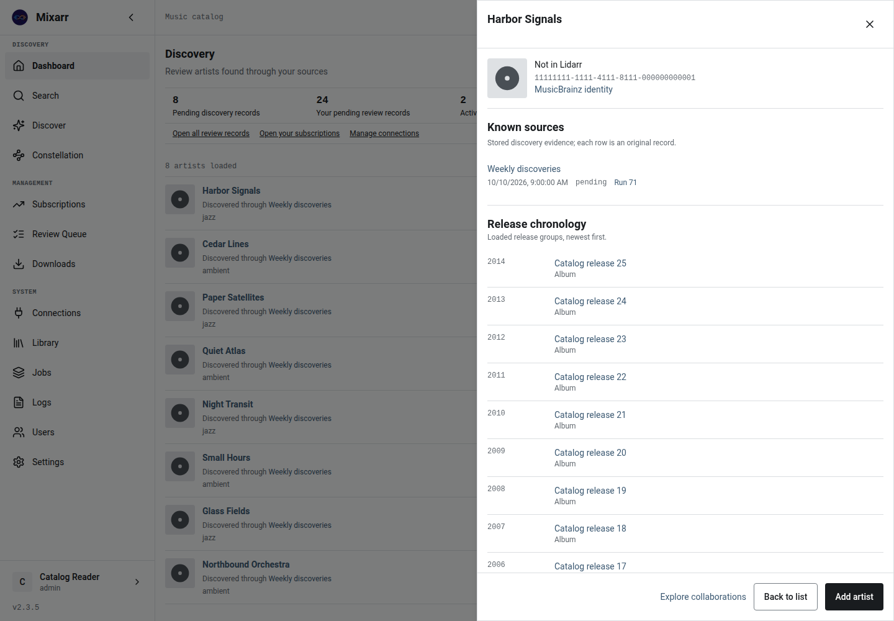
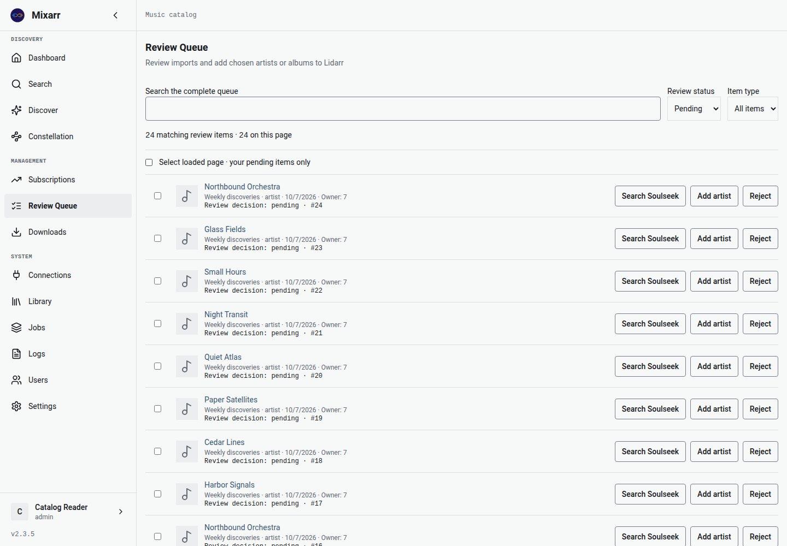
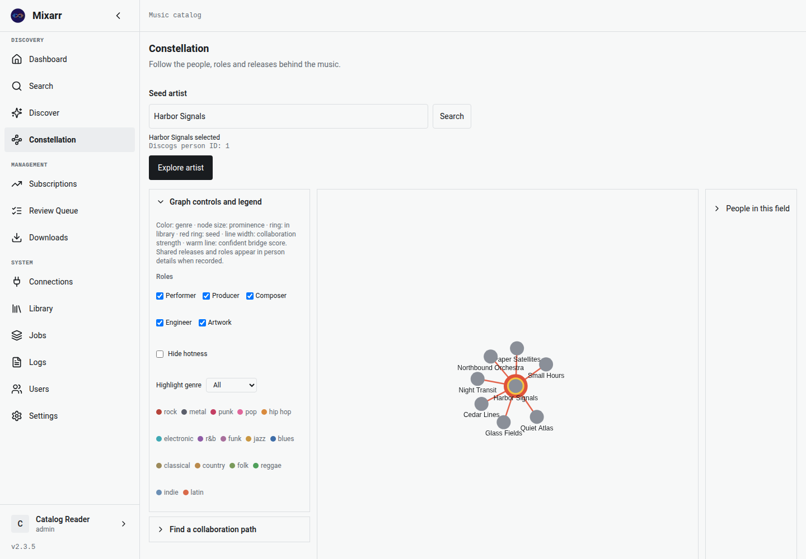
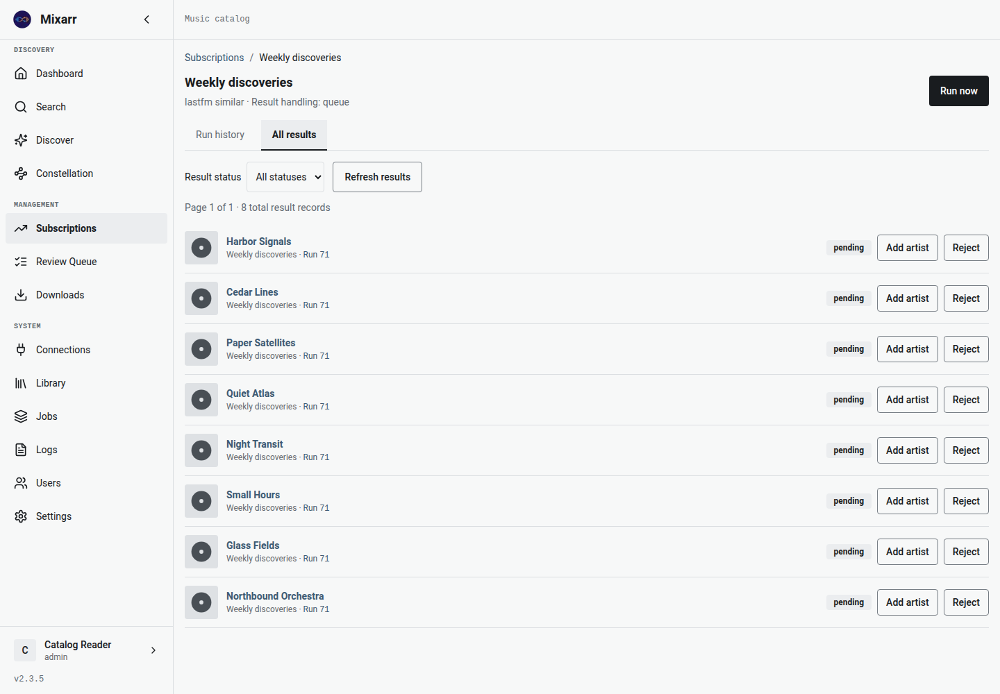
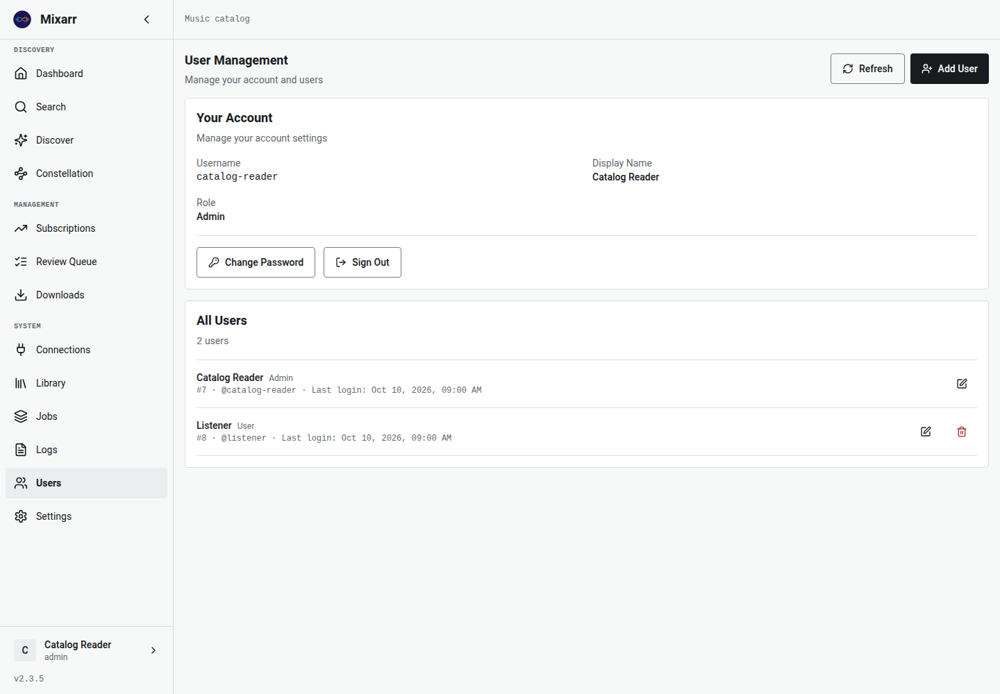

Mixarr v3.0.0 is available · AMD64 & ARM64
Bring playlists, charts, listening history, and recommendations into one music catalog. Inspect artists and their sources, review discoveries, then send your choices to Lidarr.
Released October 29, 2026. Browse a compact catalog, open the shared artist inspector, and follow the people credited on your favorite records with Collaboration Constellation.
Review discoveries with clearer outcomes and Undo, or send an artist or individual album to Lidarr. This release also fixes saved slskd connection tests, manual search timeouts, and the slim image’s default frontend connection.
Upgrading from v2? Back up first, keep your volumes and session secret, and use the versioned image. Released v2 schemas upgrade directly through checked migrations. Allow for a brief application restart.
Bring your music sources together
Integrations depend on each provider’s current API and authorization. See known issues, including TIDAL and Jellyfin compatibility. Live provider verification remains separate from release testing.
Also includes Jellyfin, Discogs, Bandcamp, and optional AI recommendations via OpenAI, Anthropic, or compatible endpoints such as Ollama.
Music discovery is scattered across playlists, charts, listening history, and record credits. Mixarr brings those leads into a compact catalog with artwork, source links, and persistent review actions.
Schedule subscriptions, inspect an artist’s identity and release chronology, and follow a discovery back to its subscription and run when recorded. Review results before adding them to Lidarr, or choose automatic handling per subscription. Pending, confirmed, failed, and uncertain acquisition outcomes stay distinct.
Browse artwork rows with source context and always-visible actions. Switch to the artwork view when you want a different way to browse.

Inspect MusicBrainz identity, library membership, discovery sources, and release chronology without losing your place.
Schedule playlists, charts, tags, listening history, and recommendations. Choose preview, review queue, or automatic handling for each subscription.

Filter and page through review records. Approve or reject discoveries, undo eligible decisions, and distinguish confirmed additions from failures or uncertain outcomes.

Explore people who share recording credits, inspect roles and releases, and find collaboration paths. The graph stays bounded to 300 visible people.
Manage service connections, check authorization separately from connection tests, and use library maintenance tools. AI recommendations and slskd search are optional.


Fresh Playwright captures of the dev interface with fictional demonstration data. Click any image to enlarge. These images demonstrate the UI, not live provider connectivity.
For a new installation, save this as docker-compose.yml. Create a .env file with SESSION_SECRET (generate once with openssl rand -hex 32) and BASE_URL=https://YOUR-IP:3443. Keep that file for upgrades.
services:
mixarr:
image: ghcr.io/aquantumofdonuts/mixarr:v3.0.0
container_name: mixarr
ports:
- "3443:443"
- "3010:3000"
volumes:
- ./mixarr-data:/data
environment:
SESSION_SECRET: ${SESSION_SECRET:?Set SESSION_SECRET in .env}
BASE_URL: ${BASE_URL:?Set BASE_URL in .env}
FRONTEND_URL: ${BASE_URL}
restart: unless-stopped
# Start with: docker compose up -d
# Open https://YOUR-IP:3443For a new installation, save SESSION_SECRET, BASE_URL, and FRONTEND_URL in .env as shown in the quick start. Reuse the same file when recreating the container.
docker run -d \
--name mixarr \
-p 3443:443 \
-p 3010:3000 \
-v ~/mixarr-data:/data \
--env-file .env \
ghcr.io/aquantumofdonuts/mixarr:v3.0.0Use the v3.0.0 Unraid template, or enter the Docker Run settings in Unraid’s Docker UI: image ghcr.io/aquantumofdonuts/mixarr:v3.0.0, HTTPS port 3443:443, a persistent /data mapping, and the same environment variables. Keep existing data mappings and the session secret when updating an installed container.
Requirements: Docker on AMD64 or ARM64; Docker Compose for the Compose option; a Lidarr instance for library additions. After installation, create an admin account and configure your connections.
Unified v3.0.0 includes MariaDB, Redis, and Caddy. For an external database and Redis, use v3.0.0-slim and the slim deployment guide. Both variants are published; latest and slim are moving stable aliases.
Already running Mixarr? Follow the upgrade guide with your existing configuration. Back up first, retain volumes and SESSION_SECRET, and read the v3 API changes before updating custom clients.